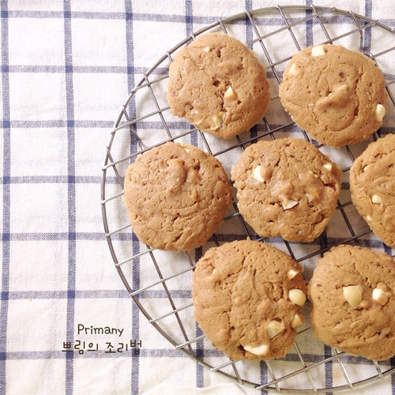

สูตรคุกกี้แบบนิ่มง่าย ๆ มาฝาก หน้าตาดี วิธีทำน่าสนใจมาก ๆ ซึ่งเจ้าของสูตร คุณ primany สมาชิกเว็บไซต์พันทิปดอทคอม โปรดปรานการกินซอฟท์คุกกี้เป็นอย่างมาก เลยลองศึกษา ค้นหาสูตรจนเจอสูตรคุกกี้นิ่มที่ตัวเองชอบ ใครอยากจะลองทำไว้ให้แฟนให้เพื่อนชิมก็ลองมาดูสูตรซอฟท์คุกกี้กันทางนี้เลยจ้า
ส่วนผสม ซอฟต์คุกกี้
◆ แป้งสาลีอเนกประสงค์ 1+1/4 ถ้วย (แป้งบัวแดง)
◆ ผงฟู 1/2 ช้อนชา (อันนี้ลองด้วยเอง ถ้าใช้ผงฟู (Baking powder) จะทำให้คุกกี้พองตัวสวย เคยใช้เบกกิ้งโซดา (Baking Soda) แล้วคุกกี้แฟ่บเลยค่ะ อ่านมาจากเว็บเมืองนอกค่ะ )
◆ เนยสด 125 กรัม (พักทิ้งไว้จนนิ่ม)
◆ น้ำตาลทรายแดง 1/2 ถ้วย (อันนี้แล้วแต่คนนะคะ ถ้าชอบหวาน ๆ ก็เพิ่มไปอีกได้ แต่ส่วนตัวแล้วแค่ 1/2 ถ้วยก็หวานแล้วนะคะ)
◆ ไข่ไก่ 1 ฟอง
◆ กลิ่นวานิลา 1 ช้อนชา
◆ แมคคาเดเมีย สับหยาบ ๆ 50 กรัม
◆ ไวท์ช็อกโกแลต 50 กรัม (ไวท์ช็อกโกแลต ถ้ามาเป็นชิ้นใหญ่ ๆ ก็สับหยาบ ๆ นะคะ แต่ถ้าเป็นเม็ดเล็ก ๆ มา ก็ใส่ลงไปเลย)
วิธีทำซอฟต์คุกกี้
► เปิดเตาอบที่อุณหภูมิ 175-180 องศาเซลเซียส เตรียมไว้
► ร่อนแป้งสาลีอเนกประสงค์กับผงฟูเข้าด้วยกัน เตรียมไว้
► ตีเนยด้วยเครื่องตีแป้งจนขึ้นฟู เติมน้ำตาลทรายแดงลงไป ตามด้วยไข่ไก่ ตีให้พอเข้ากัน (ไม่ต้องตีนาน)
► ใส่แป้งที่ร่อนไว้ลงไป ตามด้วยกลิ่นวานิลลา ตีผสมจนเข้ากันดี จากนั้นใส่แมคคาเดเมียและไวท์ช็อกโกแลตลงไป คนผสมให้เข้ากันด้วยไม้พาย
► บีบส่วนผสมคุกกี้ลงในถาดที่รองด้วยกระดาษไข นำเข้าอบประมาณ 15 นาที จนคุกกี้สุก

อะไรกันนี่ แค่ส่วนผสมอันน้อยนิด กับวิธีทำสั้น ๆ แค่นี้ก็ได้ซอฟท์คุกกี้นิ่ม ๆ ไว้กินเล่นแล้ว รีบ ๆ ไปฝึกปรือฝีมือกันเลย เผื่อทำขายสร้างรายได้เข้ากระเป๋าได้ด้วยนะ
ขอขอบคุณข้อมูลและภาพประกอบจาก
วิธีทำซอฟต์คุกกี้
► เปิดเตาอบที่อุณหภูมิ 175-180 องศาเซลเซียส เตรียมไว้
► ร่อนแป้งสาลีอเนกประสงค์กับผงฟูเข้าด้วยกัน เตรียมไว้
► ตีเนยด้วยเครื่องตีแป้งจนขึ้นฟู เติมน้ำตาลทรายแดงลงไป ตามด้วยไข่ไก่ ตีให้พอเข้ากัน (ไม่ต้องตีนาน)
► ใส่แป้งที่ร่อนไว้ลงไป ตามด้วยกลิ่นวานิลลา ตีผสมจนเข้ากันดี จากนั้นใส่แมคคาเดเมียและไวท์ช็อกโกแลตลงไป คนผสมให้เข้ากันด้วยไม้พาย
► บีบส่วนผสมคุกกี้ลงในถาดที่รองด้วยกระดาษไข นำเข้าอบประมาณ 15 นาที จนคุกกี้สุก

คุณ primany สมาชิกเว็บไซต์พันทิปดอทคอม
Copyright © EAT&EAT nc. สงวนลิขสิทธิ์